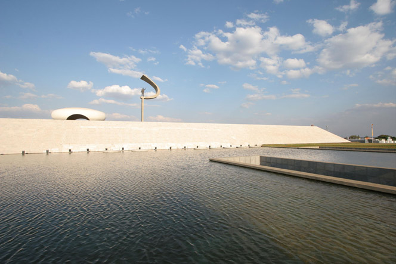

Distrito Federal (Brasília)
O Distrito Federal (DF), localizado no coração do Brasil, é a sede do governo federal e a capital do país, Brasília, que foi projetada pelo arquiteto Oscar Niemeyer e planejada por Lúcio Costa. A cidade é um dos maiores exemplos de planejamento urbano moderno no mundo e possui grande relevância histórica, política e cultural. Além disso, o Distrito Federal é um destino turístico interessante, com diversas opções de lazer, cultura, gastronomia e natureza. A cidade atrai turistas de todas as partes do Brasil e do mundo, especialmente aqueles interessados em arquitetura, história política e também em explorar suas opções de ecoturismo.
Brasília se destaca pela sua arquitetura futurista e seus monumentos emblemáticos, sendo considerada Patrimônio Cultural da Humanidade pela UNESCO. O DF também é conhecido por sua grande variedade de parques, lagos e espaços ao ar livre que oferecem atividades de lazer e contato com a natureza. A cidade é um destino turístico que une modernidade, arte e natureza, fazendo com que os visitantes possam apreciar tanto suas construções icônicas quanto seus espaços verdes.
Observação: A efeito de simplificação, Distrito Federal, Brasília e Plano-Piloto serão aqui tratados como sendo uma única coisa, uma vez que não há definição clara e definida sobre esta região. Nomenclaturas são redefinidas e readotadas por diversas vezes ao longo dos anos. Portanto, aqui será adotado o conceito da Constituição Brasileira, a qual afirma que o DF não pode ser dividido em municípios.
Principais pontos turísticos
- Catedral Metropolitana de Brasília
- Palácio do Planalto
- Congresso Nacional
- Parque da Cidade Sarah Kubitschek
- Lago Paranoá
A Catedral de Brasília, projetada por Oscar Niemeyer, é uma das construções mais emblemáticas da cidade. Sua arquitetura única, com pilares que se assemelham a mãos levantadas para o céu, chama a atenção de todos que visitam a cidade. O interior da catedral é igualmente impressionante, com vitrais que criam um ambiente de luz e espiritualidade.
A Catedral é um ícone da cidade e um exemplo marcante da arquitetura modernista. É um lugar de grande importância religiosa e cultural, além de ser um dos principais pontos turísticos de Brasília.
O Palácio do Planalto é a sede do poder executivo do Brasil e está situado na Praça dos Três Poderes, rodeado por outros edifícios icônicos, como o Congresso Nacional e o Supremo Tribunal Federal. O Palácio foi projetado por Oscar Niemeyer e é um dos maiores exemplos da arquitetura modernista brasileira.
Além de ser um importante marco da arquitetura e história política do Brasil, o Palácio do Planalto oferece visitas guiadas que permitem aos turistas conhecer mais sobre o funcionamento do governo brasileiro.
O Congresso Nacional é outro grande símbolo de Brasília, com sua imponente arquitetura projetada por Oscar Niemeyer. O edifício abriga as duas casas do Congresso Nacional: a Câmara dos Deputados e o Senado Federal. Os turistas podem visitar o prédio e apreciar sua estrutura futurista, além de aprender sobre o sistema político brasileiro.
Além de ser um ponto turístico emblemático, o Congresso Nacional é o centro do processo legislativo brasileiro, tornando a visita ainda mais significativa para quem deseja entender o funcionamento do governo.
O Parque da Cidade é um dos maiores parques urbanos do mundo, com diversas opções de lazer ao ar livre, como trilhas, áreas para piquenique, quadras esportivas e lagos. É um ótimo local para caminhadas, passeios de bicicleta e atividades recreativas. O parque também abriga o Memorial JK, dedicado ao ex-presidente Juscelino Kubitschek, fundador de Brasília.
O Parque da Cidade é essencial para quem deseja fazer atividades ao ar livre e conhecer um pouco mais sobre a história de Brasília, além de ser um ponto de encontro popular para os brasilienses.
O Lago Paranoá é um dos maiores atrativos naturais de Brasília, oferecendo diversas atividades aquáticas, como passeios de barco, jet ski e stand-up paddle. O lago é rodeado por várias áreas verdes, além de ser uma excelente opção para quem deseja relaxar e desfrutar de uma bela vista.
O Lago Paranoá proporciona um contraste com a arquitetura moderna da cidade, oferecendo aos turistas uma experiência de lazer em meio à natureza, com diversas opções de passeios e entretenimento.
Principais pontos gastronômicos
- Restaurante Buffalo Bio
- Localização: Brasília.
- Mercado Municipal de Brasília
- Localização: Asa Sul, Brasília.
- Feira da Torre de TV
- Localização: Asa Norte, Brasília.
- Churrascaria Espeto de Ouro
- Localização: Asa Norte, Brasília.
O restaurante Buffalo Bio apresenta ao público o conceito de churrasco gaúcho. Além de um ambiente aconchegante, você poderá desfrutar de um serviço de máxima qualidade. Disponibiliza amplo salão decorado para casamentos. O Buffalo Bio acolherá a sua comemoração com todo carinho e cuidado.
Coloca a disposição dos noivos uma equipe treinada e altamente capacitada. O cardápio está composto por entradas, acompanhamentos, rodízio de carnes nobres e sobremesa.
O Mercado Municipal é o lugar ideal para quem quer conhecer a culinária local. O mercado oferece uma grande variedade de alimentos típicos do cerrado, como pequi, guariroba e carne de sol. Além disso, há várias opções de restaurantes e lanchonetes que servem pratos típicos do DF e de outras regiões.
O Mercado Municipal é um excelente lugar para degustar produtos frescos e tradicionais da região, proporcionando uma verdadeira imersão na cultura gastronômica local.
A Feira da Torre de TV é um dos principais pontos de compras e gastronomia de Brasília. No local, os turistas podem encontrar artesanato, roupas e alimentos típicos do cerrado, como doces de frutas nativas, queijos e biscoitos. É também um ótimo lugar para experimentar o famoso "churrasquinho de chão" e as delícias locais.
A feira é um lugar onde é possível conhecer melhor as tradições gastronômicas e culturais do Distrito Federal, além de ser um excelente local para fazer compras e provar comidas típicas.
Aprimorando a cada dia a sua gastronomia, a Churrascaria Espeto de Ouro é um local onde seus convidados poderão desfrutar de uma comida de alto nível de qualidade. Os clientes poderão provar os sabores da verdadeira carne assada na brasa e pratos da cozinha regional, servidos em um ambiente aconchegante e diferenciado. A Churrascaria Espeto de Ouro dispõe de amplos salões com capacidade para receber até 250 convidados.
O local é climatizado para oferecer um ambiente confortável. Um churrasco tradicional elaborado para agradar aos mais exigentes paladares será servido em formato rodízio, acompanhado por um farto buffet de pratos quentes, guarnições, massas e saladas. Todos os pratos são elaborados com ingredientes de primeira linha e carnes nobres da melhor procedência, garantindo assim o máximo de sabor.
Principais pontos culturais
- Museu Nacional Honestino Guimarães
- Localização: Praça dos Três Poderes, Brasília.
- Teatro Nacional Claudio Santoro
- Localização: Eixo Monumental, Brasília.
- Memorial JK 
- Localização: Parque da Cidade, Brasília.
- Parque Ecológico Dom Bosco
- Localização: Estrada Parque Dom Bosco.
O Museu Nacional Honestino Guimarães é um dos principais centros culturais de Brasília, com exposições temporárias de arte moderna e contemporânea, além de eventos culturais e atividades educacionais. O edifício que abriga o museu foi projetado por Oscar Niemeyer e é um exemplo da arquitetura moderna.
O museu é um importante ponto de referência para quem deseja conhecer mais sobre a arte e a cultura brasileira e internacional, com exposições que refletem a diversidade cultural do país.
O Teatro Nacional é um dos principais espaços culturais de Brasília, com uma agenda cheia de espetáculos, como peças de teatro, concertos, óperas e danças. Sua arquitetura, também assinada por Oscar Niemeyer, é um dos maiores exemplos do modernismo no Brasil.
O Teatro Nacional oferece uma programação cultural diversificada, sendo um dos locais mais importantes para os apreciadores das artes cênicas.
O Memorial Juscelino Kubitschek é um espaço dedicado à vida e à obra do ex-presidente brasileiro que idealizou e fundou Brasília. O memorial conta com um acervo de objetos pessoais, fotos e documentos históricos, além de um sarcófago onde estão os restos mortais de Juscelino Kubitschek.
O memorial é uma importante atração para quem deseja conhecer mais sobre a história política do Brasil e sobre a criação de Brasília.
Às margens do Lago Paranoá, o Parque Ecológico Dom Bosco oferece mais do que paisagens exuberantes do Cerrado aos seus visitantes. A área de 131 hectares, no Lago Sul, é um dos cartões postais da cidade, a Ermida.
O tradicional monumento e ponto turístico de Brasília é mais uma das incríveis obras projetadas pelo arquiteto Oscar Niemeyer. Inaugurada em 1957, a capela brasileira é dedicada a Dom Bosco, padroeiro da cidade.